Sri Lanka is a tropical paradise offering beautiful beaches, lush mountains, cultural heritage sites, wildlife adventures, and unforgettable travel experiences.
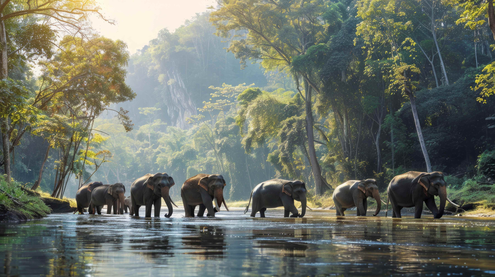
Sigiriya is one of Sri Lanka’s most iconic cultural destinations, located in the heart of the Cultural Triangle. Dominated by the dramatic Sigiriya Rock Fortress, the area blends ancient history, rural village life, and natural beauty. Recognized as a UNESCO World Heritage Site.
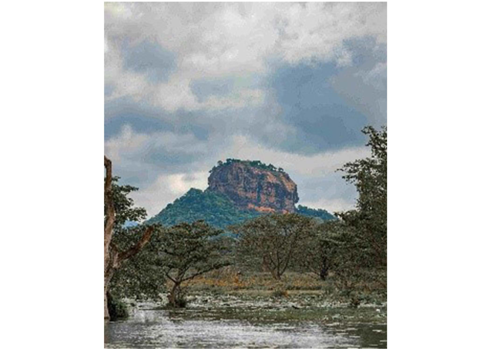
Sigiriya Rock Fortress
Rising nearly 200 meters above the surrounding plains, the rock fortress was built in the 5th century as a royal citadel. The climb reveals water gardens, frescoes, the Mirror Wall, and summit ruins, ending with panoramic views of the countryside.
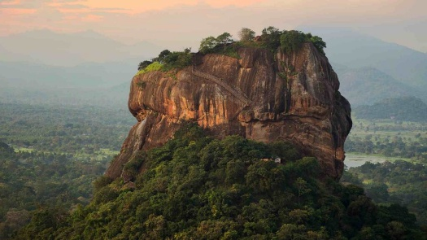
Pidurangala Rock
Pidurangala offers a rewarding hike with one of the best viewpoints in the region. The trail passes through a historic cave temple and opens to a dramatic outlook facing Sigiriya Rock, especially striking at sunrise or sunset.
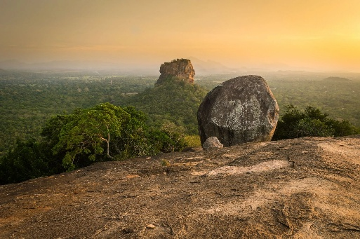
Hiriwadunna Village Experience
The surrounding villages showcase traditional Sri Lankan rural life. Move through paddy fields by bullock cart & catamaran, observe daily farming activities, and enjoy a simple home-cooked village meal.
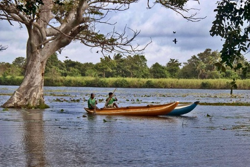
POLONNARUWA Polonnaruwa is one of Sri Lanka’s most important ancient regions and served as the island’s second royal capital between the 11th and 13th centuries. Today it is a UNESCO World Heritage Site, celebrated for its exceptionally well-preserved ruins, vast irrigation systems, and peaceful surroundings. The area offers a balanced experience of history, culture, spirituality, and nearby wildlife, making it a key destination within the Cultural Triangle.
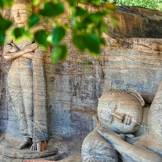
Ancient City Ruins
The ancient city reveals the grandeur of Sri Lanka’s medieval civilization through royal palaces, sacred temples, monasteries, and stone sculptures spread across a wide archaeological park. Exploring the site allows visitors to understand the advanced urban planning, religious life, and artistic achievements of the Polonnaruwa era, either on foot or by bicycle in a calm, scenic setting.
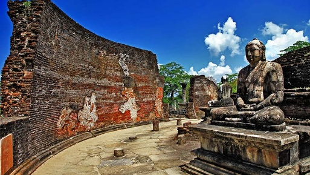
Madirigiriya Vatadageya
Madirigiriya Vatadageya, situated a short drive from Polonnaruwa, is a beautifully preserved circular relic house dating back to the early Anuradhapura period. Surrounded by forest and far less crowded than major archaeological sites.
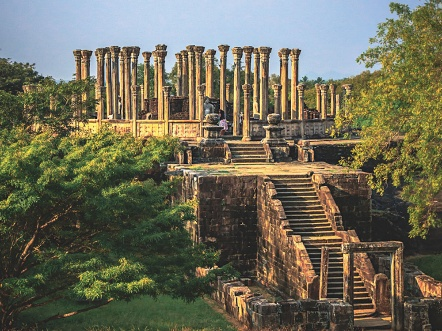
Dambulla is a sacred town best known for its remarkable cave temple complex, which has served as a place of worship for over two thousand years. The town lies at the crossroads of the Cultural Triangle and is closely connected to nearby ancient cities.
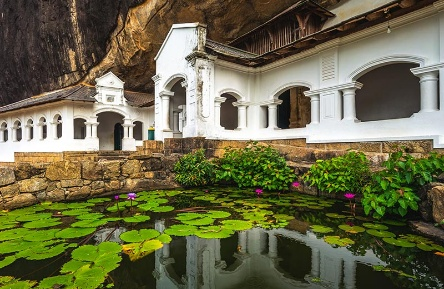
Dambulla Cave Temple
The cave complex consists of five caves adorned with hundreds of Buddha statues and extensive ceiling murals. The site offers a powerful insight into Buddhist art and devotion across centuries.
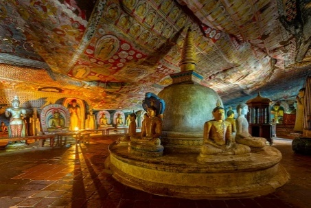
Local Market Experience
The Dambulla wholesale vegetable market reflects the agricultural life of the region, with vibrant displays of fresh produce arriving from across the country.
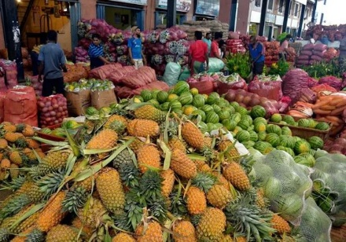
Kandy, set among green hills and centered around a scenic lake, was the last royal capital of Sri Lanka. As a UNESCO World Heritage City, it remains the country’s cultural and spiritual heart, deeply connected to Buddhist traditions.
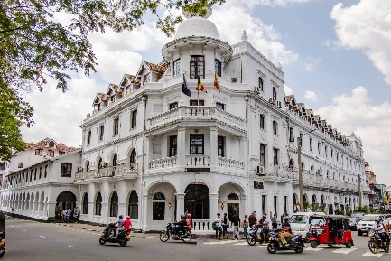
Temple of the Tooth Relic
This revered temple houses one of Buddhism’s most sacred relics. Visitors can witness daily rituals accompanied by drumming and offerings, experiencing the spiritual atmosphere of the city.
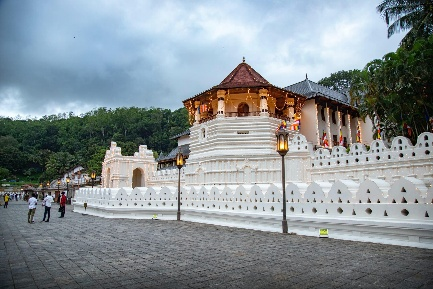
Cultural Dance Show
Traditional Kandyan dance performances present vibrant costumes, drumming, and fire acts that reflect Sri Lanka’s cultural heritage.
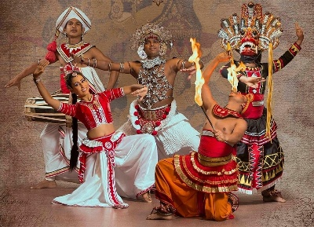
Peradeniya Botanical Gardens
Located just outside the city, these gardens feature a vast collection of tropical plants, orchids, palms, and shaded walking paths.
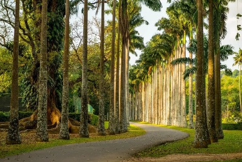
Udawatta Kele Sanctuary
Udawatta Kele Sanctuary is a protected forest reserve in the heart of Kandy and was once used by Kandyan royalty. It offers peaceful walking trails surrounded by dense greenery and rich birdlife. The sanctuary is ideal for a short nature escape away from the city.
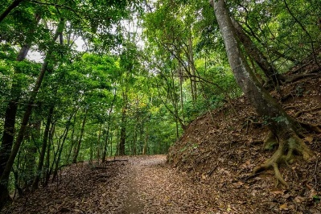
Nuwara Eliya is a charming hill station known as “Little England,” surrounded by rolling tea plantations and mist-covered mountains. Its cool climate and colonial architecture create a calm and refreshing atmosphere.
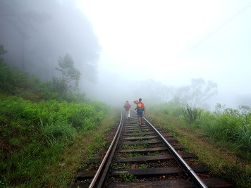
Tea Plucking Experience
Join local workers in the tea plantations to learn how fresh tea leaves are hand-plucked. It’s an immersive way to experience Sri Lanka’s tea culture and scenic hill landscapes.
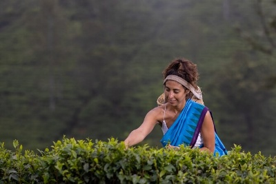
Gregory Lake
The lake area is ideal for relaxed walks and boat rides, offering a pleasant setting within the town.
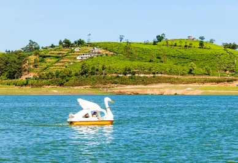
Hakgala Botanical Garden
Set against a mountain backdrop, this garden displays a wide variety of flowers and plants in a peaceful natural environment.
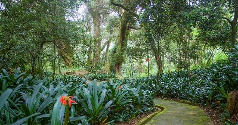
Ella is a laid-back hill town surrounded by tea plantations, waterfalls, and dramatic mountain scenery. Its relaxed atmosphere and scenic viewpoints make it a favorite among nature lovers.
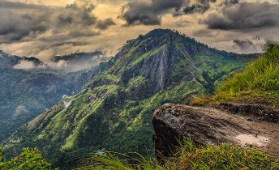
Little Adam’s Peak
An easy and enjoyable hike leading to panoramic views over the Ella Gap and surrounding valleys.
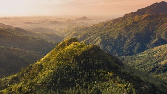
Nine Arches Bridge
This iconic colonial-era railway bridge is set amid lush greenery and is especially photogenic when trains pass through.
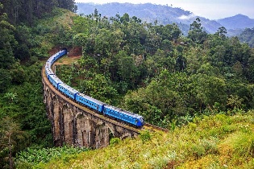
Sri Lanka’s national parks are home to elephants, leopards, and diverse wildlife. Visitors can enjoy safaris, birdwatching, and scenic nature experiences across forests, grasslands, and wetlands.
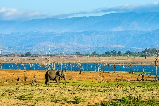
Yala National Park
Safaris offer opportunities to spot leopards, elephants, crocodiles, deer, and a wide range of bird species in their natural habitat.
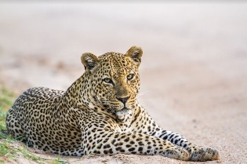
Minneriya & Kaudulla National Park
Wolds largest Asian Elephants Gathering. Jeep safaris pass through grasslands and forest edges where elephants, deer, birds, and other wildlife are commonly seen
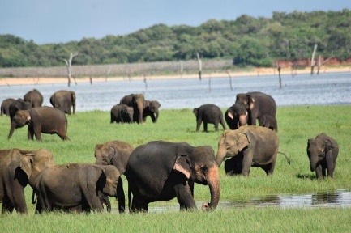
Kumana National Park
Kumana National Park is famous for its large populations of birds, including migratory species, and elephants roaming the forests. It offers peaceful safaris through wetlands, lagoons, and dense jungle landscapes
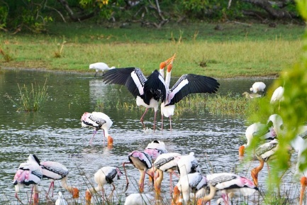
Udawalawe National Park
Udawalawe is famous for its large elephant population and wide-open plains. Visitors can enjoy jeep safaris and spot other wildlife like water buffalo, deer, and birds.
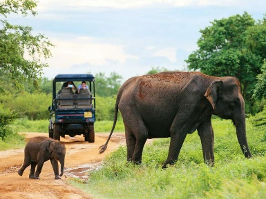
Wilpattu National Park
Wilpattu is known for its ancient forest and natural lakes, called villus, attracting leopards and elephants. The park provides a serene and less-crowded safari experience.
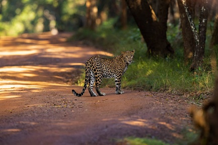
Horton Plains National Park
A highland plateau with misty grasslands and cloud forests, home to endemic flora and fauna. Famous for the dramatic World’s End cliff and Baker’s Falls.
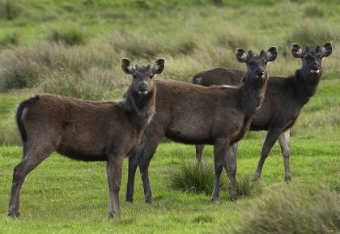
Gal Oya National Park
Known for its wild elephants and scenic reservoir, Gal Oya offers boat safaris to see wildlife in a tranquil setting. Visitors can spot deer, monkeys, and a variety of birds.
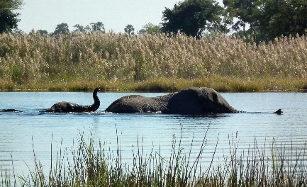
Sri Lanka offers diverse hiking experiences ranging from misty mountain trails to lush rainforest paths and ancient pilgrimage routes. Hikers can explore scenic tea plantations, cascading waterfalls, cloud forests, and breathtaking viewpoints while encountering rich wildlife and cultural landmarks along the way. From gentle nature walks to challenging summit climbs, Sri Lanka’s hikes provide unforgettable adventures for nature lovers and outdoor enthusiasts alike.
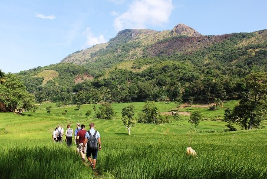
Little Adam’s Peak
A gentle hike in Ella offering panoramic views of tea plantations and valleys. It’s an easy trek suitable for all fitness levels.
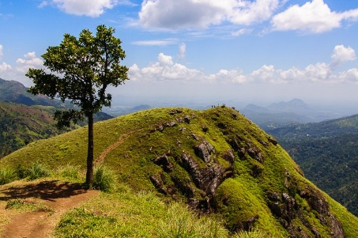
Adam’s Peak (Sripadaya)
A sacred pilgrimage hikes up a steep mountain to watch sunrise from the summit. The trek passes through forests and misty landscapes.
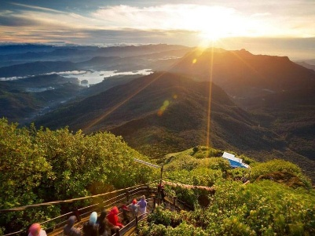
Knuckles Mountain Range
Challenging treks through remote forests and peaks with misty mountain views. Ideal for adventure seekers and nature lovers.
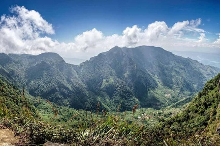
Pekoe Trail
The Pekoe Trail in Sri Lanka is divided into 22 distinct stages, forming a 300-kilometer long-distance hiking route through the central highlands' tea country, with each stage varying in length (around 9-18 km) and difficulty. Hikers can tackle the entire trail or select specific stages to experience tea plantations, villages, and forests, often using apps like AllTrails for navigation.
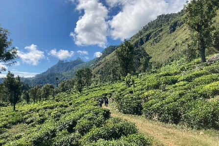
Upper Diyaluma Waterfalls Trek
The Upper Diyaluma Trek leads to the top of Sri Lanka’s second-highest waterfall, surrounded by lush forests and tea estates. It’s a moderately challenging hike where visitors can enjoy panoramic views, natural pools, and the breathtaking cascade from above.
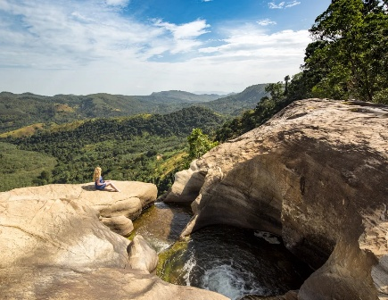
Sri Lanka’s beaches are famous for golden sands, clear waters, and palm-fringed shores. They offer swimming, sunbathing, water sports, and relaxing coastal escapes
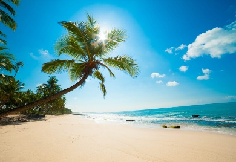
Mirissa
Mirissa is a golden sandy beach known for whale watching and calm waters. It’s perfect for swimming, sunbathing, whale watching and seaside relaxation.
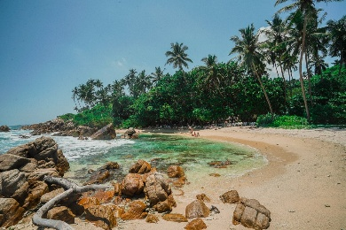
Unawatuna
Unawatuna is a lively beach with coral reefs and safe swimming areas. It offers snorkeling, coastal walks, and vibrant beachfront cafés.
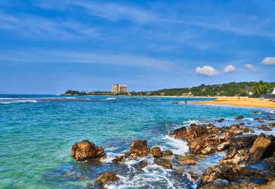
Hikkaduwa
Hikkaduwa features coral reefs and surf-friendly waves, attracting snorkelers and surfers alike. The beach is lively with local shops and nightlife.
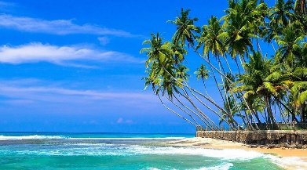
Bentota
Bentota has wide, calm beaches ideal for water sports and relaxation. Visitors can enjoy jet skiing, banana boat rides, and scenic river safaris nearby.
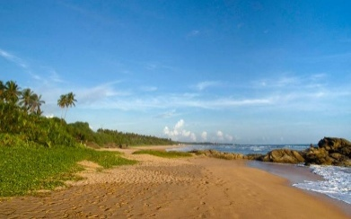
Pasikudah
Pasikudah is known for its shallow, calm waters and long sandy coastline. It’s ideal for swimming, relaxing, and family-friendly beach activities.
Nilaveli
Nilaveli in trincomalee offers pristine beaches and turquoise waters. It’s perfect for snorkeling, diving, and quiet seaside enjoyment.
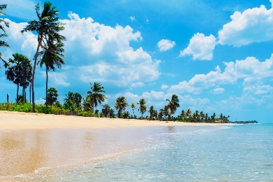
Arugam bay
Arugam bay is famous for surfing with a laid-back beach vibe. It attracts surfers and travelers seeking relaxed coastal scenery.
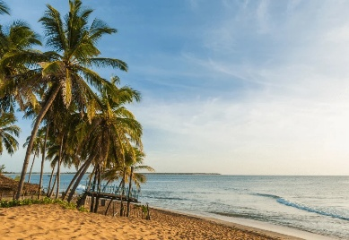
Talpe & Weligama
Talpe and weligama are calm beaches suitable for swimming and beginner surfing. Local fishing villages add cultural charm to the area.
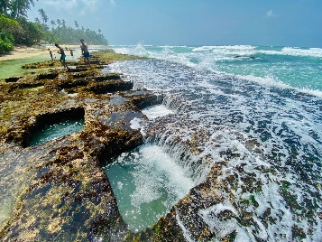
Polhena
Polhena beach near matara is a small, safe bay ideal for swimming. Its coral reef provides a natural pool for snorkeling.
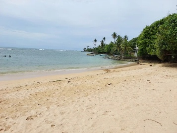
Hambantota
Hambantota beaches offer quiet coastal stretches and scenic fishing villages. Visitors can enjoy calm waters, boat rides, and wildlife nearby.
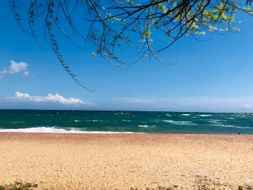
Kalpitiya
Kalpitiya’s beaches are known for kite surfing, dolphins, and wide sandy shores. The area is popular for adventure water sports and peaceful coastal stays.
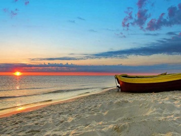